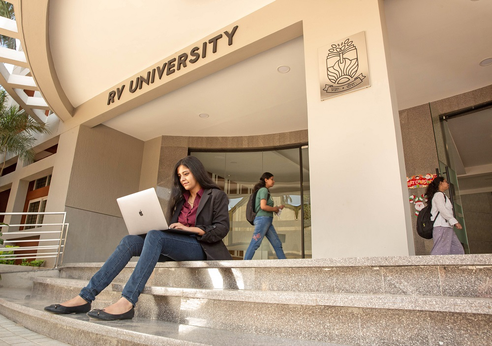

World-Class Faculty:
Outstanding and highly
qualified faculty members
with an excellent
curriculum framed in
consultation with top
academics and industry
experts.
Pioneering Research:
Ample opportunity for students
to get involved in research
under the guidance of experts.
They also get to use the latest
facilities and tools to discover
and publish innovative
solutions to complex problems.
Global Exposure:
Collaborations with top
class national and
international universities
to create learning
opportunities through
transformative exchange
programme
Explore the world class education at RVU:
1.School of Computer Science and Engineering
B.Tech (Hons) | B.sc. (Hons)
2.School of Design and Innovation
B.Des | M.Des
3.School of Economics
B.A (Hons)(Economics) | M.A.(Economics)
3.School of Flim and Media Studies
4.School of Law
B.A LL.B (Hons) | B.B.A LL.B (Hons) | LL.M
5.School of Public Policy
BSc(Hons) Computer Science Program:
BSc (Hons) Computer Science Program at RV University offers students a firm foundation in computing and specialisation in cutting edge technologies. The courses also provides an opportunity for students for interdisciplinary learning by doing a minor in other schools at RVU, Latest teaching and learning methods have been incorporated in the course design to enable flipped learning, mastery learning and peer learning using modern world class facilities. The general core and electives of the program improve 21st century skills such as, communication skills, creativity and innovation, collaboration, Social awareness, self-awareness Critical thinking, Problem solving skills and others which are highly sought after by leading industries for placements. Our innovative assessment methods focus on learner analytics leading to individual target profiles for global careers. Our faculty have hands-on knowledge with industry and research experience and have degrees from premier universities in India and abroad. Our student clubs and plenty of extracurricular activities ensure memorable campus life.
B.Tech(Hons) Computer Science and Engineering Program:
BTech (Hon) Computer Science and Engineering Program at RV University offers students a firm foundation in computing and specialisation in cutting edge technologies. The courses also provides an opportunity for students for interdisciplinary learning by doing a minor in other schools at RVU, Latest teaching and learning methods have been incorporated in the course design to enable flipped learning, mastery learning and peer learning using modern world class facilities. The general core and electives of the program improve 21st century skills such as, communication skills, creativity and innovation, collaboration, Social awareness, self-awareness Critical thinking, Problem solving skills and others which are highly sought after by leading industries for placements. Our innovative assessment methods focus on learner analytics leading to individual target profiles for global careers. Our faculty have hands-on knowledge with industry and research experience and have degrees from premier universities in India and abroad. Our student clubs and plenty of extracurricular activities ensure memorable campus life.
BBA :
At RV University, we strive to provide students with a holistic outlook on business administration discipline. We like to keep them abreast with the pertinent events so as to prepare them for the future. We encourage students to be curious and courageous to question the existing practices. We equip them with skill-sets to help them deconstruct the existing policies, practices and reframe them for the current needs. RV university believes that change is the only constant and that one needs to at least keep pace with it. We do not limit our curriculum to the conventional courses seen across established institutes. Instead, we endeavour to expose students to contemporary issues such that they can be the harbinger of change that the industry desires. Our curriculum is designed so as to inculcate knowledge through practice and collaboration with industry and academic experts. We at RV university take due cognizance of a student’s individuality and wish to aid them in their career growth.
B.Com :
The B.Com (Hons) programme at RV University has been specifically designed to create well-rounded and skill oriented graduates supported by an inter-disciplinary and experienced faculty. The B.Com (Hons) programme has been designed keeping in view the emerging business environment without missing fundamentals and it offers a multitude of sought after specializations to support the individual talents and career needs of the aspirants. The interdisciplinary approach supported by a team of expert faculties ensures that the students have choices of subjects suiting to their aspirations, without compromising on the quality. One of the core themes of the School of Business has been to co-create educational values and skills that the industry demands so that our students gain the potential of becoming well placed in the financing industry. The course also offers an introduction to accounting, financing and risk management fundamentals that can enable the students to face professional certification programmes. The University also facilitates the students who wish to take up professional certifications through counseling and guiding.
**Bachelor of Commerce is an on-campus, honors program is a full time 4 years programme with 179 Credit points fully complying with the New Education Policy requirements.
B.Des :
The Bachelor of Design (B.Des.) is a degree programme of four-year duration offering Design Foundation in Year 1 and Specialisations in Product Design and Innovation, Designed Environments, Information and Graphic Design and User Experience Design in Years 2, 3 and 4.
MINORS :
The Bachelor of Design curriculum would offer a minor in one of the specialisations offered by the School of Liberal Arts and Sciences and the School of Economics and Finance along with other specialisations offered by the School of Design. In addition, there will be few electives offered by all the three schools.
Contact
For general enquiry: enquiry@rvu.edu.in
Phone: +91 95136 73778
For admissions: admissions@rvu.edu.in
Phone: +91 89511 79896
Location: RV Vidyanikethan Post
8th Mile , Mysuru Road, Bengaluru - 560 059